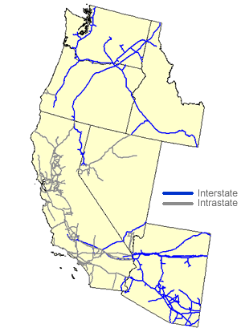

|
About U.S. Natural Gas Pipelines - Transporting Natural
Gas
based on data through 2007/2008 with selected updates |
|||||||||||||||||||||||||||||||||||||||||||||||||||||||||||||||||||||||||
|---|---|---|---|---|---|---|---|---|---|---|---|---|---|---|---|---|---|---|---|---|---|---|---|---|---|---|---|---|---|---|---|---|---|---|---|---|---|---|---|---|---|---|---|---|---|---|---|---|---|---|---|---|---|---|---|---|---|---|---|---|---|---|---|---|---|---|---|---|---|---|---|---|---|
|
Ten interstate and nine intrastate natural gas pipeline companies provide transportation services to and within the Western Region (Arizona, California, Idaho, Nevada, Oregon, and Washington), the fewest number serving any region (see Table below). Slightly more than half the capacity entering the region is on natural gas pipeline systems that carry natural gas from the Rocky Mountain area and the Permian and San Juan basins. These latter systems enter the region at the New Mexico-Arizona and Nevada-Utah State lines. The rest of the capacity arrives on natural gas pipelines that access Canadian natural gas at the Idaho and Washington State border crossings with British Columbia, Canada. While the destination of a major portion of its deliveries is the California State border, this natural gas pipeline system also provides substantial service to customers in Arizona, especially to the growing natural gas fired electric power generation market. It is also a secondary source of supply for the Southwest Gas Company (at the Arizona/Nevada State border), a major supplier of natural gas to southern Nevada and the Las Vegas metropolitan area. The Kern River Transmission Company system (1.8 Bcf per day), which begins at Opal, Wyoming, and extends through Utah and Nevada to Kern County, California, is currently the primary source of supply for the area, providing over 80 percent of the natural gas consumed in southern Navada. Transwestern Pipeline Company's 2.4 Bcf per day natural gas pipeline system almost parallels the northern route of the El Paso Natural Gas Company system from West Texas through the San Juan Basin of northern New Mexico. It also delivers a large portion of its transported supplies to the California border and is a major participant within the Arizona marketplace. Both the Transwestern Pipeline Company and El Paso Natural Gas Company systems deliver supplies to the three major intrastate natural gas pipelines operating in California: Southern California Gas Company (SoCal), California Gas Transmission Company (formerly PG&E Gas Transmission), and San Diego Gas & Electric Company (via the Southern California Gas Company system). In addition, both Transwestern Pipeline Company and El Paso Natural Gas Company deliver to the Mojave Pipeline Company (0.4 Bcf per day) system, which enters the region at the northern Arizona/California border and crosses to Kern County, where it then merges with the Kern River Transmission Company system. The Mojave Pipeline Company and Kern River Transmission Company systems were the first interstate natural gas pipelines (in 1992) to extend into the State of California, which previously limited its territory to intrastate pipelines service only. |
Western Region Natural Gas Pipeline Network

|
||||||||||||||||||||||||||||||||||||||||||||||||||||||||||||||||||||||||
|
The El Paso Natural Gas Company’s southern system is the principal deliverer of natural gas to the southern leg of the SoCal system at Blythe, California, which in turn provides a route for natural gas deliveries to the San Diego Gas & Electric Company system and natural gas exports to Mexico at several locations along the border. In late 2002, the El Paso Natural Gas Pipeline began deliveries to the new North Baja Pipeline Company system (0.5 Bcf per day), which has substantially increased the delivery of U.S. natural gas to electric power generation plants located in North Baja California, Mexico. [Map and Table of Import/Export Points] In 2008, however, the North Baja Pipeline Company installed a bidirectional capability on its system, recognizing that natural gas volumes produced at LNG import facilities located in Baja, Mexico, would be large enough to flow into the United States to customers in California and Arizona, as well as meet Mexican demand. The bi-directional capacity from Mexico to the United States may be expanded further by 2011, increasing the capacity from Mexico to as high as 2.0 Bcf per day. In July 2002, Questar’s Southern Trails Pipeline Company system, a converted oil pipeline with a capacity of 0.1 Bcf per day, began transporting natural gas from the four-corners area of Utah/Arizona/New Mexico/Colorado to the California/Arizona border near Needles. Originally designed to extend into California as far as the Pacific Coast in the Long Beach area, the final leg of the project was canceled owing to California's anti-bypass regulatory policy. Although the system does include interconnections with California Gas Transmission Company and the Southern California Gas Company within the State of California near the Arizona/California border, for the time being, the final destination for much of the gas transported on the Southern Trails Pipeline is a natural gas fired electric power generation plant located in western Arizona. Transportation Services in the Northern Tier The Gas Transmission Northwest Company system also interconnects with Northwest Pipeline Company at Stansfield, Oregon, providing Canadian shippers that wish to deliver natural gas (up to 0.05 Bcf per day) to the Vancouver, British Columbia, area via an alternative route to the existing northern natural gas pipeline route within Canada, an opportunity to do so. Initiated in 1999, this routing of Canadian natural gas was the first time natural gas export service was provided by the Northwest Pipeline Company at Sumas, Washington, which was normally the import point for Canadian supplies destined for Washington State and northern Oregon (via Northwest Natural Gas Company). Sumas is the northern terminus for the Northwest Pipeline Company system, where it receives up to 1.8 Bcf per day of Canadian supplies and transports them within the northern tier of the region. Several local natural gas importing pipelines (Ferndale Pipeline Company and Sumas Energy International Company) also operate though the Sumas location. [Map and Table of Import/Export Points] The Northwest Pipeline Company system begins at Sumas, Washington, and extends southeast through Oregon, Idaho, northern Utah, Wyoming, and southward into the San Juan Basin in southern Colorado. In addition to delivering Canadian natural gas along the northern section in Washington, Oregon and Idaho, the Northwest system is bidirectional, with the capability to direct natural gas supplies from the prolific Wyoming natural gas fields and the San Juan Basin to these northwest States when needed. Northwest Pipeline Company also is the only source of supply for the Pauite Pipeline Company system (0.2 Bcf per day) which taps the Northwest system at the Idaho/Nevada border and delivers natural gas to the Reno, Nevada area from the northeast (while the Tuscarora Pipeline Company delivers from northern California). |
|||||||||||||||||||||||||||||||||||||||||||||||||||||||||||||||||||||||||
| Principal Natural Gas Pipeline Companies Serving the Western Region
with links to pipeline web sites
|
|||||||||||||||||||||||||||||||||||||||||||||||||||||||||||||||||||||||||
{kind=link}